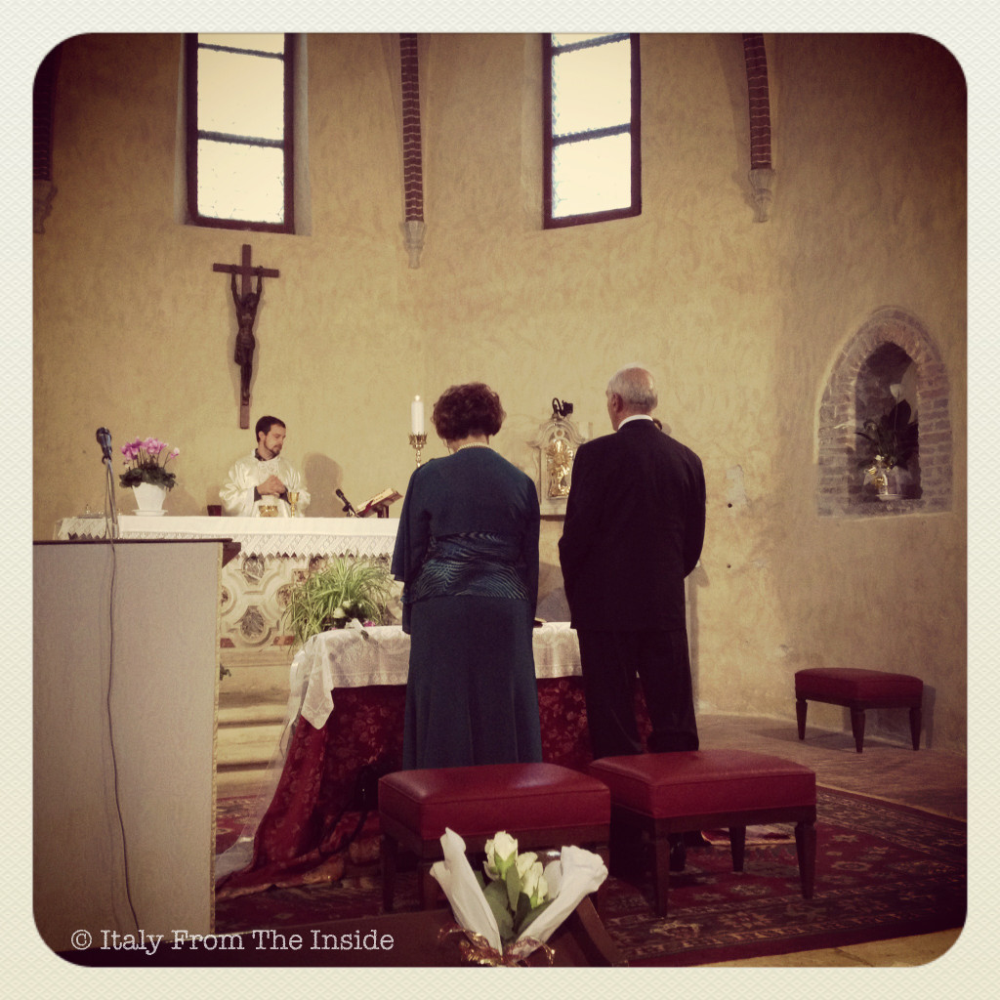

Two years ago my in-laws celebrated their 50th wedding anniversary with a holy mass held in a little medieval church built in 1411 in Muggia (near Trieste). Did you know that the golden anniversary, or nozze d'oro, originated during the Roman Empire, when the husband used to crown his wife with a golden wreath? Now guess which gift they have received in three different versions...